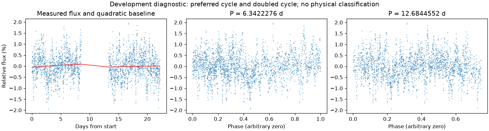
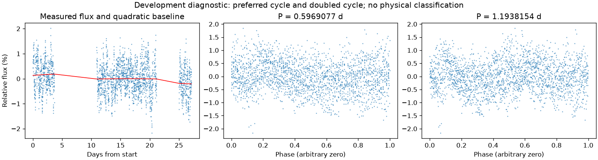

并非所有时段都支持重复变化
第三版周期：None 天；状态：not_established。

左图红线是缓慢基线；右面两图去除该基线。若未通过周期要求，两图只展示得分最高的竞争解释。
| 竞争周期（天） | 预测方法与改善 | 各组改善 | 通过初筛 |
|---|---|---|---|
| 6.3422276 | 交替循环：-2.4% | -1.3% / -5.5% | 否 |
| 1.0838709 | 交替循环：-9.4% | -8.4% / -10.5% | 否 |
| 1.2620766 | 交替循环：-11.8% | -9.6% / -14.3% | 否 |
| 1.9828639 | 交替循环：-12.8% | -11.0% / -14.6% | 否 |
| 0.9792110 | 交替循环：-15.5% | -12.7% / -19.4% | 否 |
| 2.5741668 | 交替循环：-16.0% | -20.9% / -11.5% | 否 |
| 2.1062397 | 交替循环：-16.8% | -16.2% / -17.3% | 否 |
| 3.6807423 | 交替循环：-27.0% | -20.8% / -34.1% | 否 |
“预测改善”衡量用一组周期的形状预测另一组，比只有缓慢基线好多少；负数表示更差。搜索和预测共用了资料，因此这不是可信概率，也不是独立验证。
第三版周期：None 天；状态：not_established。

左图红线是缓慢基线；右面两图去除该基线。若未通过周期要求，两图只展示得分最高的竞争解释。
| 竞争周期（天） | 预测方法与改善 | 各组改善 | 通过初筛 |
|---|---|---|---|
| 0.5969077 | 交替循环：-1.1% | 0.4% / -2.7% | 否 |
| 1.1112237 | 交替循环：-4.2% | -2.7% / -5.9% | 否 |
| 2.0917492 | 交替循环：-12.0% | -7.4% / -17.4% | 否 |
| 1.0538187 | 交替循环：-12.2% | -16.0% / -8.6% | 否 |
| 1.1937220 | 交替循环：-13.2% | -11.1% / -15.7% | 否 |
| 0.2967765 | 交替循环：-14.9% | -13.4% / -16.8% | 否 |
| 0.5273463 | 交替循环：-18.3% | -17.2% / -19.5% | 否 |
| 0.5562320 | 交替循环：-18.9% | -22.1% / -15.4% | 否 |
“预测改善”衡量用一组周期的形状预测另一组，比只有缓慢基线好多少；负数表示更差。搜索和预测共用了资料，因此这不是可信概率，也不是独立验证。